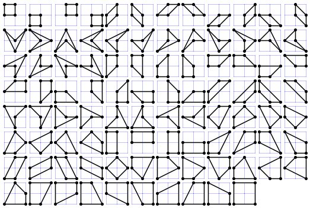

A simple quadrilateral is a polygon that has four distinct vertices, has no straight angles and does not self-intersect.
Let Q(m, n) be the number of simple quadrilaterals whose vertices are lattice points with coordinates (x,y) satisfying 0 ≤ x ≤ m and 0 ≤ y ≤ n.
For example, Q(2, 2) = 94 as can be seen below:

It can also be verified that Q(3, 7) = 39590, Q(12, 3) = 309000 and Q(123, 45) = 70542215894646.
Find Q(12345, 6789) mod 135707531.